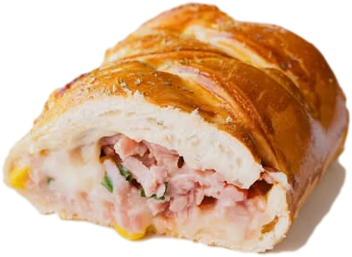
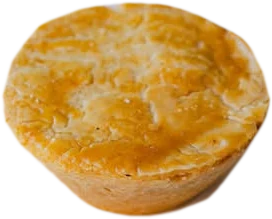
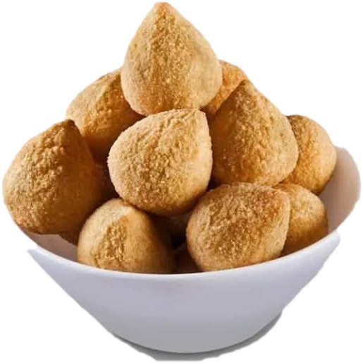
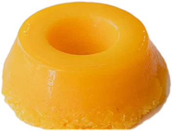
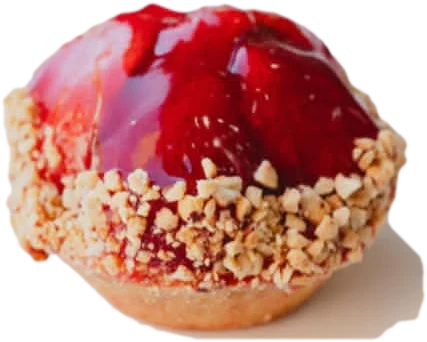
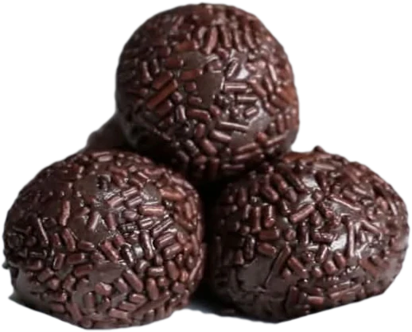
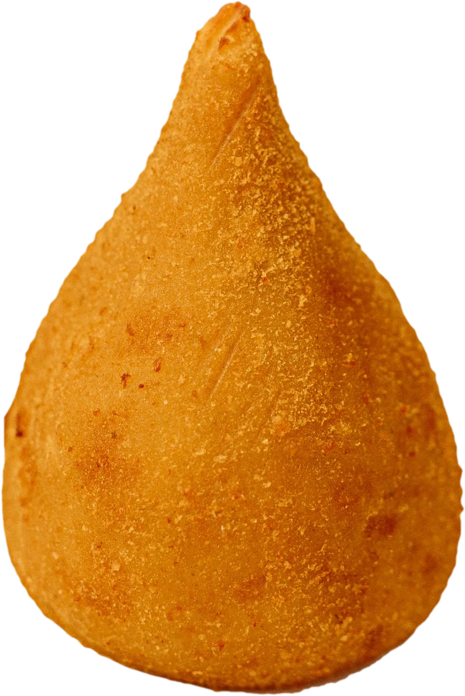
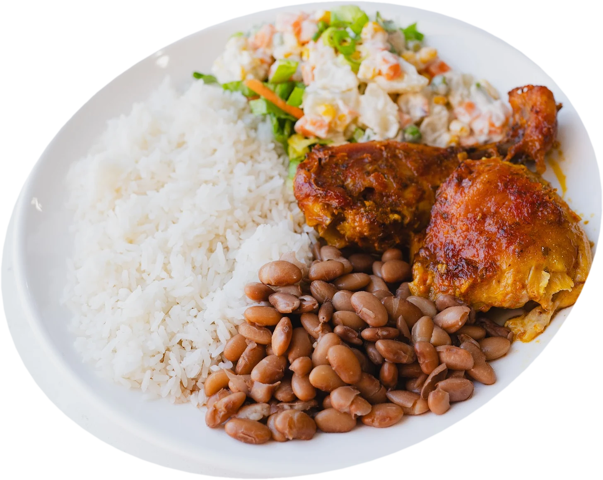
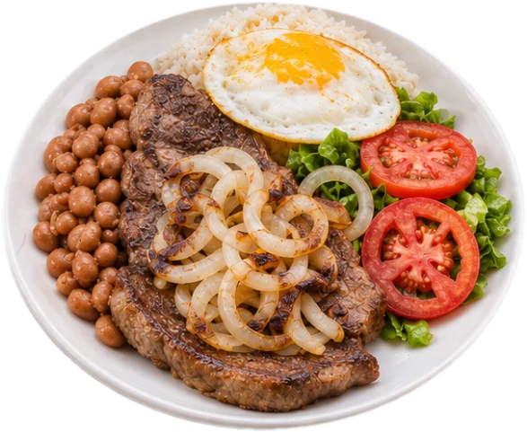
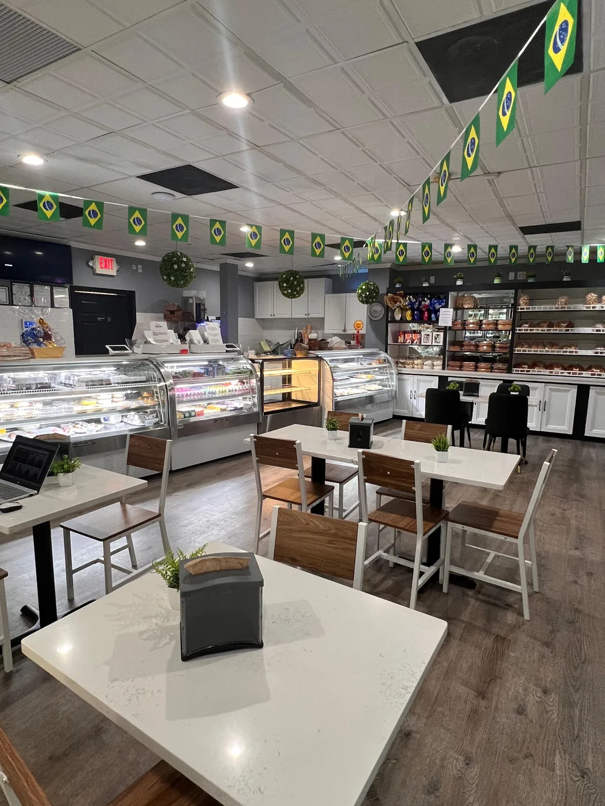

CB Bakery, Brazilian bakery and restaurant in Worcester, MA






Brazilian bakery & restaurant on Belmont St, Worcester.
Salgados, breads, sweets and lunch plates, from 5 in the morning.
- Open
- Mon to Sat 5am to 9:30pm · Sun 7am to 7pm
- Call
- (508) 792-9333
- Rated
- 4.6 on Uber Eats, 900+ ratings
Salgados, fried and baked all day.
Coxinha, empada, catarina, pão de queijo from $1. Get a box for the party.
Brazilian sweets, by the piece.
Quindim, tortinhas, brigadeiros, and cake by the slice: carrot, fubá, banana, coconut.
And a real lunch. Look at the O’s.
Plates from the kitchen: rice, beans, meat and salad, the way it’s done in Brazil.



Ricewhite, fluffy
Beansslow cooked
Chickenroasted golden
Saladcreamy, with greens
From the kitchen, all day.
- Frango grelhadogrilled chicken with fries$16.00
- Carne de sol com mandiocasun-dried beef with cassava$18.00
- Feijão tropeirobeans with farofa and sausage$10.50
- Caldo mistochicken and bean soup$10.99
- X-Tudothe Brazilian burger with everything$17.50
- Misto quente especial#1 most liked on Uber Eats$6.50
“Taste so authentic and home made.”
Divine E., on the caldo misto, DoorDash

Open Mon to Sat from 5am
Come early. We open at 5.
Brazilian bakery and restaurant on Belmont St. Latino-owned.
- Where
- 108 Belmont St, Worcester, MA 01605 · Directions
- Hours
- Mon to Sat 5am to 9:30pm · Sun 7am to 7pm
- Call
- (508) 792-9333
- Rated
- 4.6 Uber Eats (900+) · 4.5 Google (199)